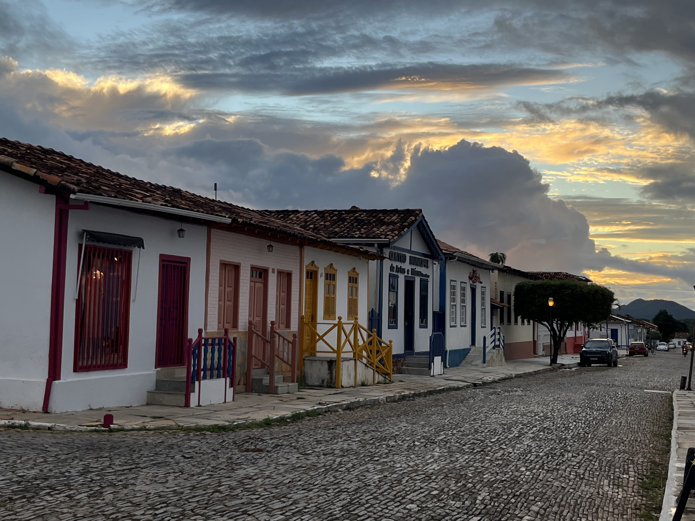
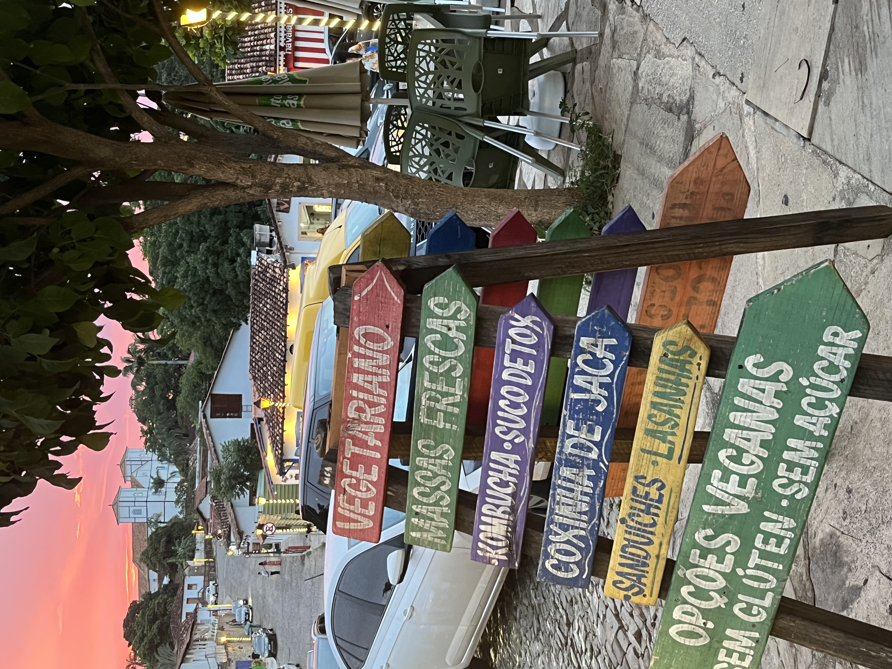
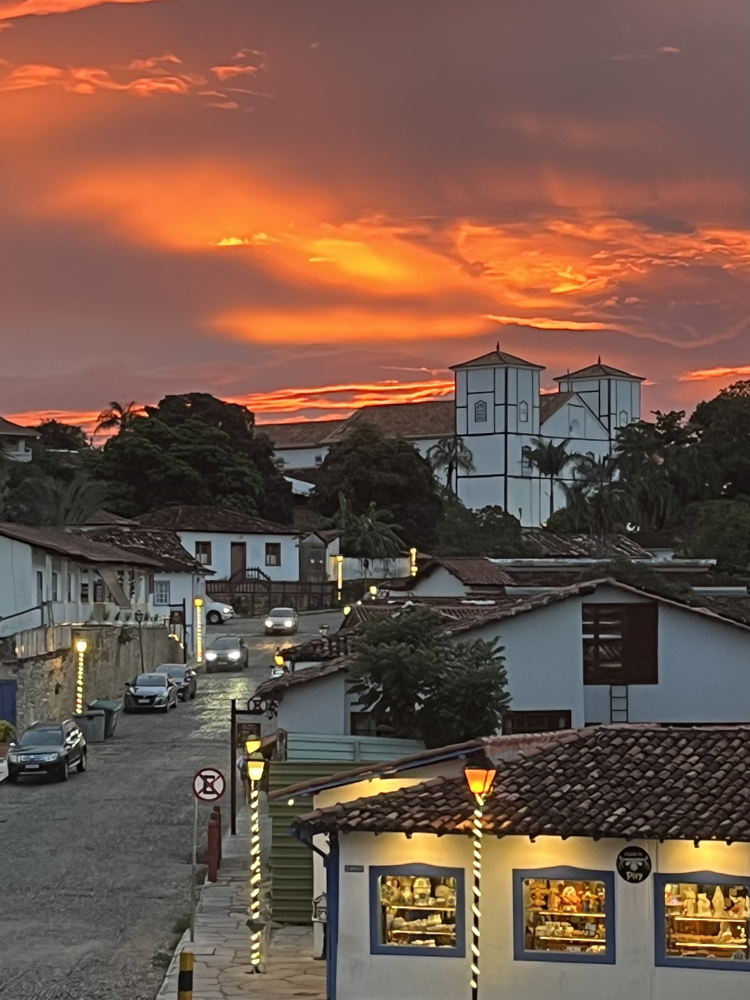
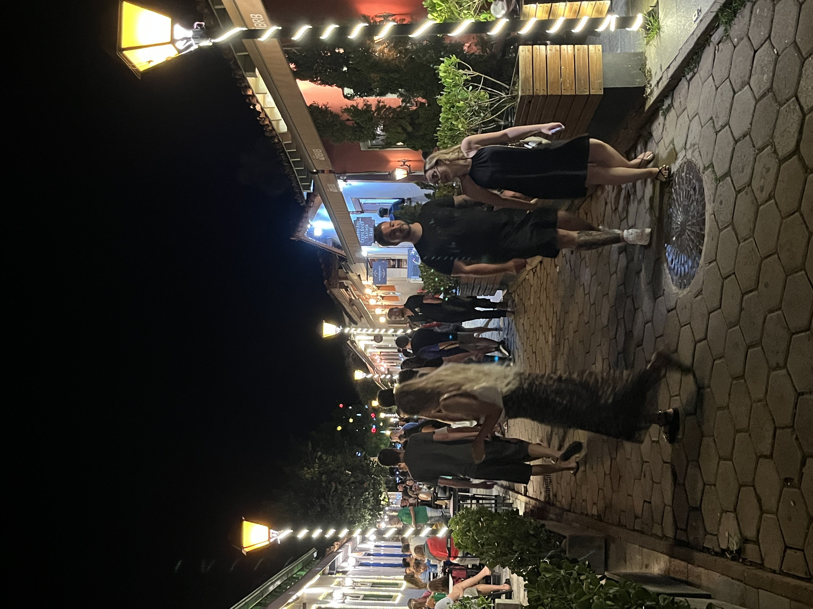

Pirenópolis — known locally as "Piri" — is a colonial town of 25,000 inhabitants in the state of Goiás, 150 km from Brasília and 130 km from Goiânia. It is known for its cobblestone streets, colorful colonial architecture, and exceptional natural surroundings: dozens of waterfalls, cerrado hiking trails, and the Parque Estadual dos Pireneus sit right at its doorstep.
The pace is slow, the cost of living is low, and in just a few days you already feel like you are part of the city — everything is walkable, and in minutes you can be at the edge of a river or a waterfall. Pirenópolis is increasingly on the radar of remote workers looking for an authentic Brazilian base without the noise and cost of larger cities.




Climate
Warm and sunny most of the year. Summers (December–February) are hot and rainy; winters (June–August) are dry and can be surprisingly cool at night. The shoulder seasons — March to May and September to November — are ideal for working and exploring.
History and architecture
Founded in 1727, Pirenópolis is one of Brazil's most well-preserved colonial towns. The downtown area features baroque churches, colorful colonial buildings, and cobblestone streets. The Igreja Matriz — the town's 18th-century main church — is the focal point of the historic center, surrounded by restaurants, bars, and craft shops all reachable on foot.
Natural surroundings
The area around Pirenópolis is home to some of Brazil's most beautiful waterfalls: Cachoeira do Lázaro, Cachoeira do Abade, Vale da Lua, and more. The Parque Estadual dos Pireneus offers hiking trails through dense cerrado forest, and Morro do Frota — the town's iconic rocky hill — is visible from much of the town.
Food and culture
Pirenópolis has a lively local food scene built around fresh regional ingredients — Goiás cheese, cerrado fruits, and dishes from the wood-fired traditions of the interior. Weekly markets, craft shops, and artisan studios fill the center. Weekends bring Brazilians from Brasília, giving the town a convivial energy without losing its small-town character.
Digital Nomad Visa
Brazil offers a Digital Nomad Visa (VITEM XIV) that allows remote workers to stay and work for up to a year, with the possibility of renewal for a further year. Applications can be made from inside or outside Brazil. Requirements include proof of remote employment or freelance contracts with a foreign company. Check the Brazilian consulate in your country for current documentation requirements.
Getting here
The nearest airports are Brasília International (BSB, ~150 km) and Goiânia (GYN, ~130 km). Transfers can be arranged directly with Horayma. The drive from Brasília takes approximately 1.5–2 hours depending on road conditions.
Is Pirenópolis good for digital nomads?
Yes — particularly for those who value a slower pace, nature access, and low cost of living. Everything in the historic center is walkable, waterfalls are minutes away, and the town has a warm, welcoming local character. It is not a city with coworking spaces or a large nomad community, but it is an excellent base for focused, independent remote work — especially with a well-equipped space like Mini Casa Piri or Casa Matutina.
Do I need to speak Portuguese?
Basic Portuguese is helpful, especially outside tourist contexts. Pirenópolis is not a major international destination, so English is not widely spoken in shops or restaurants. Horayma communicates in Portuguese, English, and German.